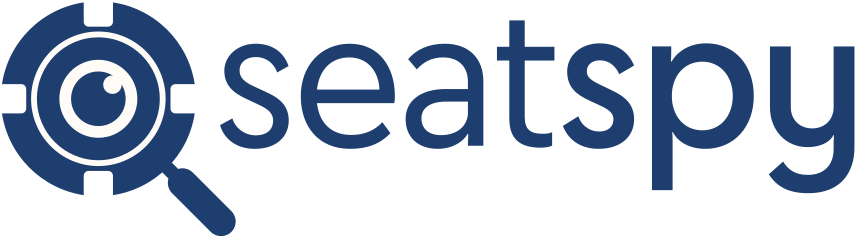

Terms of Use
Effective Oct. 23, 2026
These terms cover your use of SeatSpy, an iPhone app made by Nick Gassmann. By using SeatSpy, you agree to them. If you do not agree, do not use the app.
What SeatSpy Is
SeatSpy is a note-taking and study aid for poker players. It sorts the players you face into types and suggests ways to play against each type. Those suggestions are general advice. They do not account for every hand or every player, and they do not guarantee a result. You make every decision at the table.
Using It at the Table
Casinos, cardrooms and online poker sites set their own rules about phones and outside help during play. Some ban using a device while you are in a hand. Follow the rules where you play. You are responsible for any penalty that comes from using SeatSpy somewhere it is not allowed.
You must be old enough to gamble where you play to use SeatSpy for real-money games.
What You Record About Other Players
Your book holds your reads on real people. Keep it to what you see at the table. Do not record anything you would not want shared, such as a player’s contact details, health, finances or anything unrelated to poker. You are responsible for what you write and for any copy of your book you share. The Privacy Policy explains where your book is stored.
Your Data
Your book belongs to you and is kept on your phone. I do not have a copy and cannot restore it for you. Back up book in Settings saves a copy you can keep. If you lose your phone or delete the app without a backup, the book is gone.
The App and Its Content
SeatSpy’s design, player types, advice and other content belong to Nick Gassmann. You may use them for your own play. Do not copy, resell or republish them, and do not reverse engineer the app.
Updates
I may change SeatSpy, add or remove features, or stop offering it at any time. Updates download in the background and apply the next time the app starts.
No Warranty
SeatSpy is provided “as is,” without any warranty. I do not promise that it will be free of errors, that it will always work, or that its advice will help you win.
Limit of Liability
To the extent the law allows, I am not liable for any loss that comes from using SeatSpy, including money lost at the table, lost data or penalties from a casino, cardroom or poker site. Where the law does not allow that limit, my total liability is limited to the amount you paid for the app.
Apple
These terms are between you and me, not Apple. Apple has no duty to support SeatSpy or answer claims about it. If SeatSpy fails to meet a warranty that applies to it by law, you can tell Apple, and Apple may refund the price you paid. Apple and its subsidiaries are third-party beneficiaries of these terms and can enforce them against you.
Governing Law
These terms are governed by the laws of the State of California.
Changes
If these terms change, I will update this page and the date at the top. Using SeatSpy after a change means you accept the new terms.
Contact
Questions go to nickgassmann@gmail.com.